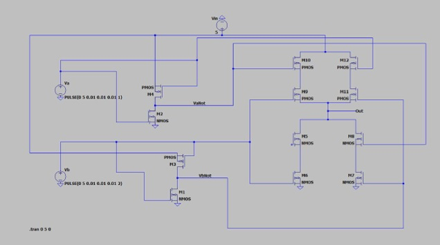
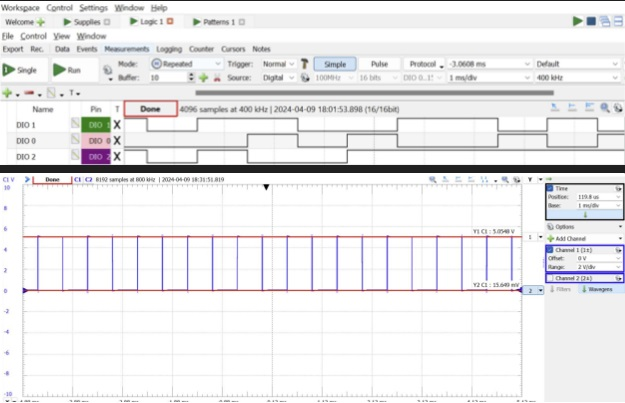
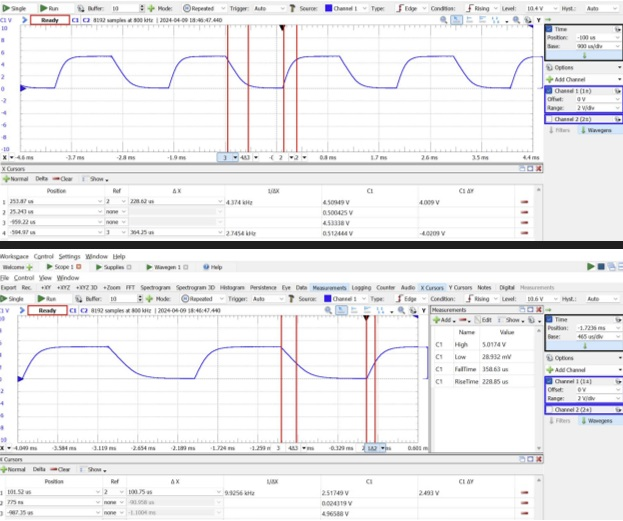

Custom Built MOSFET-Based XOR Gate
Project Overview
Introduction:
- Title: Custom Built MOSFET-Based XOR Gate
- Duration: April 2024 - April 2024
- Role: Project Engineer
- Technologies Used: MOSFETs, LT Spice, Waveforms Software, Analog Discovery 2
Summary:
This project involved designing and implementing a custom-built XOR gate using PMOS and NMOS transistors. The aim was to optimize transistor sizing for balanced timing in the gate, a critical aspect for maintaining accurate logic operations. Detailed analysis using Waveforms software and hardware testing with Analog Discovery 2 were key to measuring and optimizing the gate’s performance.
Objectives:
- Design Precision: Craft a custom-built XOR gate with accurate transistor sizing to balance timing.
- Simulation Accuracy: Utilize Waveforms software for detailed circuit simulations to predict and optimize real-world behavior.
- Validation and Testing: Employ Waveforms software and Analog Discovery 2 for empirical testing and validation.
- Optimization: Continuously improve gate performance based on testing feedback, focusing on timing precision and propagation delay.
Technologies and Tools:
- LT Spice: Used for detailed circuit simulation and schematic design.
- Waveforms Software: Utilized for managing digital inputs and real-time output measurement.
- Analog Discovery 2: Deployed for generating digital signals and oscilloscope functionality to observe and adjust the circuit’s performance dynamically
Project Achievements
- Optimal Sizing Achieved: Determined the ideal PMOS to NMOS size ratio as approximately 5/2 to balance the mobility differences between electron and hole charge carriers, ensuring balanced gate operations.
- Timing Precision: Managed to fine-tune the rise and fall times of the XOR gate to 228.62 microseconds and 364.25 microseconds, respectively.
- Propagation Delay Managed: Calculated an average propagation delay (Tp) of 137.56 microseconds, optimizing the gate for quick and reliable digital processing.
Gallery/Visuals
LTSpice Circuit Diagram:
Logic Analyzer Output using Waveforms Software:
Timing Measurement with Analog Discovery 2:
Challenges and Solutions
- Challenge: Adapting to fixed MOSFET sizes provided in the class component kits, which did not match the ideal calculated ratios.
- Solution: Employed circuit design adjustments and parameter tuning to mimic the effects of ideal transistor sizing, effectively managing the timing discrepancies.
Future Directions
- Component Variability Exploration: Investigate using variable-sized MOSFETs or other semiconductor materials to better achieve the desired performance metrics in future designs.
- Integration Into Complex Systems: Apply the design and analysis techniques to more intricate digital systems, potentially incorporating the XOR gate into multi-function integrated circuits.